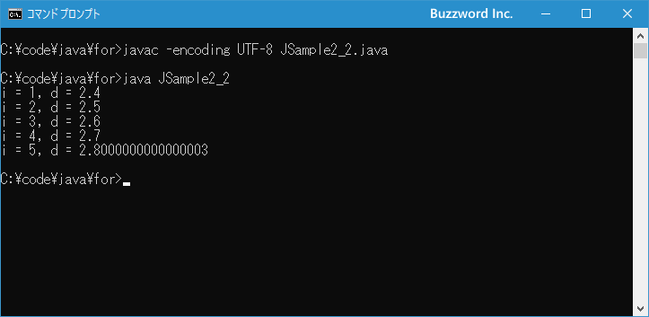

for文を使った繰り返し処理
Java で繰り返し処理を行う時に利用できる for 文の使い方について解説します。 for 文は繰り返し処理の中で決められた回数だけ繰り返しを行う場合によく使用されます。
for文の使い方
for 文は指定した回数だけ処理を繰り返す時に使われます。書式は次のとおりです。
for (初期化式; 条件式; 変化式){
// 繰り返しの中で実行される処理
...
}
初期化式は for 文が実行されるときに最初の一回だけ実行される式です。条件式で使用する変数の初期化などを主に行いますがそれに限りません。
繰り返し処理は条件式を評価して true だった場合には { から } のブロック内に記述された処理を上から順番に実行し、 false だった場合には繰り返し処理を終了し for 文の次へ処理を映します。
繰り返しが一度実行されてブロックの最後まで到達したら、変化式を一回評価します。この変化式で条件式で使用している変数の値を変換させます。そして改めて条件式を評価し、 true であれば再びブロック内の処理を行い、 false だった場合には繰り返し処理を終了します。
for 文の場合、最初の条件式が false となった場合には繰り返し処理が一回も行われません。
次のサンプルをみてください。
for (int i = 0; i < 2; i++){
System.out.println("i=" + i);
}
この場合、次のように処理が実行されています。
1)初期化式で変数 i の宣言と初期化(i = 0) 2)条件式を評価 i < 2 は true なので繰り返しを実行 3)ブロック内の処理を実行(画面に変数 i の値を出力) 4)繰り返しの1回目終了 5)変化式で変数 i に格納されている値を 1 増加(i = 1) 6)条件式を評価 i < 2 は true なので繰り返しを実行 7)ブロック内の処理を実行(画面に変数 i の値を出力) 8)繰り返しの2回目終了 9)変化式で変数 i に格納されている値を 1 増加(i = 2) 10)条件式を評価 i < 2 は false なので繰り返しを終了
結果的に繰り返し処理は 2 回実行され、それぞれ i=0 と i=1 を画面に出力します。
なお for 文の繰り返し処理で実行する処理が 1 つだけの場合は { と } を省略して次のように記述することもできます。
for (初期化式; 条件式; 変化式) // 繰り返しの中で実行される処理
この場合は for 文の次の 1 行だけを繰り返し実行します。(ただ分かりにくいのでブロックは記述することをお勧めします)。
それでは簡単なサンプルプログラムを作って試してみます。テキストエディタで次のように記述したあと、 JSample2-1.java という名前で保存します。
class JSample2_1{
public static void main(String[] args){
int sum = 0;
for (int i = 1; i <= 5; i++){
System.out.println(i);
sum += i;
}
System.out.println("合計=" + sum);
}
}
コンパイルを行います。
javac -encoding UTF-8 JSample2_1.java
その後で、次のように実行してください。
java JSample2_1
for 文の中で 1 から 5 までの数値を順番に加算していき、 for 文が終わったあとで合計した数値を画面に出力しました。
初期化式で宣言した変数のスコープ
for 文の初期化式では変数に値を代入するだけでなく変数の宣言も行うことができますが、初期化式で宣言した変数のスコープ(使用できる範囲)は for 文のブロック内だけです。次のサンプルをみてください。
for (int i = 0; i < 2; i++){
System.out.println("i=" + i);
}
System.out.println(i); // コンパイルエラー
for 文の初期化式で宣言した変数 i を for 文が終わったあとで参照しようとしていますが、コンパイルの時点でエラーとなります。for 文の初期化式で宣言した変数が使用できるのは for 文の中だけであり、 for 文の外では変数 i は宣言がされていない変数となります。
もし for 文の中で使用する変数を for 文の外でも使用する場合には、変数の宣言を for 文よりも前に行ってください。
int i;
for (i = 0; i < 2; i++){
System.out.println("i=" + i);
}
System.out.println(i); // 2
初期化式、条件式、変化式を省略する
for 文で使用する初期化式、条件式、変化式は不要であればそれぞれ省略することができます。
最初に初期化式を省略した場合です。 for 文の中で使用される変数をすでに宣言してあったりする場合は初期化式を省略することもできます。次のサンプルを見てください。
int i = 0;
for (; i < 2; i++){
System.out.println("i=" + i);
}
条件式などで使用する変数が既に宣言済みの場合など、初期化式が不要の場合は単に何も記載しないでください。この場合もセミコロン(;)は必要です。
条件式を省略した場合、条件式が常に true として扱われますので、繰り返し処理が終わることができず無限ループとなります。この場合は繰り返し処理のブロックの中で、何らかの条件を満たしたときに break 文などを使って繰り返し処理を抜ける必要があります。次のサンプルを見てください。
int sum = 0;
for (int i = 1; ; i++){
sum += i;
if (sum > 5){
break;
}
}
System.out.println(sum);
繰り返し処理の中で変数 sum に順に数値を加算していきますが、ある数値を超えたら break 文を使って for 文を抜けて次の処理へ移っています。( break 文を実行すると現在の繰り返し処理を強制的に終了します。詳しくは「break文の使い方」を参照してください)。
変化式を省略した場合、繰り返し処理が一回終わるごとに何も変更が行われないので条件式の評価が同じままで無限ループになる可能性があります。この場合は、繰り返し処理の中で条件式の評価が変わるような処理を記述する必要があります。次のサンプルを見てください。
int i = 1;
for (; i < 100;){
System.out.println(i);
i *= 3;
}
System.out.println(i);
for 文の変化式の中で条件式で使用している変数 i の値を変化させており、変化式は省略しています。この場合もセミコロン(;)は必要です。
またこのサンプルの条件式も省略して次のように記述することもできます。
int i = 1;
for (;;){
System.out.println(i);
i *= 3;
if (i > 100){
break;
}
}
System.out.println(i);
このように for 文の中で使用している初期化式、条件式、変化式については必要なければ省略を行うことができます。
複数の初期化式と変化式を使用する
for 文の初期化式および変化式では複数の式を記述することができます。複数の式を記述する場合は式と式の間をカンマ(,)で区切って記述します。
for (初期化式1,初期化式2; 条件式; 変化式1,変化式2){
// 繰り返しの中で実行される処理
...
}
※ 条件式は一つしか書くことができませんが、関係演算子と論理演算子を組み合わせることで複雑な条件式を設定することができます。
次のサンプルをみてください。
for (int i = 1, j = 5; i <= 5; i++, j--){
System.out.println("i=" + i + ",j=" + j);
}
初期化式の中で変数 i と j をそれぞれ宣言し初期値の代入も行っています。また変化式の方も変数 i と j をそれぞれ変化させています。
なお初期化式では異なるデータ型の複数の変数を次のように記述することはできません。
for (int i = 1, double d = 2.4; i <= 5; i++){
//...
}
異なるデータ型の変数を初期化式で初期化する場合は、 for 文の前で変数の宣言を行っておいてください。
int i;
double d;
for (i = 1, d = 2.4; i <= 5; i++){
//...
}
それでは簡単なサンプルプログラムを作って試してみます。テキストエディタで次のように記述したあと、 JSample2-2.java という名前で保存します。
class JSample2_2{
public static void main(String[] args){
int i;
double d;
for (i = 1, d = 2.4; i <= 5; i++, d += 0.1){
System.out.println("i = " + i + ", d = " + d);
}
}
}
コンパイルを行います。
javac -encoding UTF-8 JSample2_2.java
その後で、次のように実行してください。
java JSample2_2

初期化式および変化式をそれぞれ複数記述しました。
for文のブロック内に別のfor文を記述する
for 文の { から } のブロック内には任意の文を記述することができますが、別の for 文を記述することもできます。次のサンプルを見てください。
for (int i = 1; i < 4; i++){
for (int j = 1; j < 4; j++){
System.out.println("i = " + i + ", j = " + j);
}
}
外側の for 文が繰り返し処理を 1 回行う中で、内側の for 文は 3 回繰り返し処理を行います。外側の for 文は繰り返し処理を 3 回行うので、内側の for 文は 3 × 3 = 9 回実行されることになります。
複数の変数を同時に変化させるのではなく、外側の変数と内側の変数のすべての組み合わせ順番に行いたい場合によく使用されます。
それでは簡単なサンプルプログラムを作って試してみます。テキストエディタで次のように記述したあと、 JSample2-3.java という名前で保存します。
class JSample2_3{
public static void main(String[] args){
for (int i = 1; i < 3; i++){
for (int j = 1; j < 3; j++){
for (int k = 1; k < 3; k++){
System.out.println("i = " + i + ", j = " + j + ", k = " + k);
}
}
}
}
}
コンパイルを行います。
javac -encoding UTF-8 JSample2_3.java
その後で、次のように実行してください。
java JSample2_3

for 文のブロックの中に別の for 文を記述し、さらに内側の for 文のブロックの中に別の for 文を記述しました。それぞれの for 文の中で定義した 3 つの変数のすべての組み合わせを画面に出力しました。
-- --
Java で繰り返し処理を行う時に利用できる for 文の使い方について解説しました。
( Written by Tatsuo Ikura )

著者 / TATSUO IKURA
初心者～中級者の方を対象としたプログラミング方法や開発環境の構築の解説を行うサイトの運営を行っています。